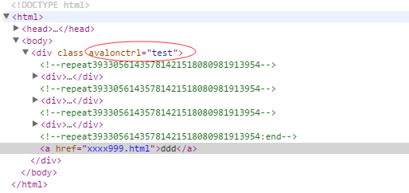
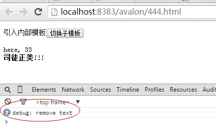
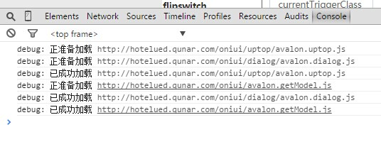
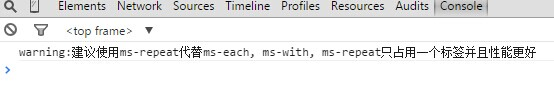
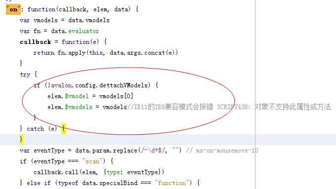

配置
本章节，主要是介绍avalon.config方法，通过它来制定一些更贴心的功能。
一般情况下，我们在使用ms-controller绑定时，需要添加一个ms-controller类名，目的是为了防止网速慢时将花括号暴露出来。
<!DOCTYPE html>
<html>
<head>
<title>avalon入门</title>
<meta http-equiv="Content-Type" content="text/html; charset=UTF-8">
<script src="avalon.modern.js" type="text/javascript"></script>
<script>
var model = avalon.define({
$id: "test",
array: [{
check: 1
}, {
check: 2
}, {
check: 3
}],
aaa: "999"
})
</script>
<style>
.ms-controller {
visibility: hidden
}
</style>
</head>
<body>
<div ms-controller="test" class="ms-controller">
<div ms-repeat="array">
{{el.check}}
</div>
<a ms-href="xxxx{{aaa}}.html">ddd</a>
</div>
</body>
</html>
双花括号也默认是python一些著名模板的界定符，为了防止冲突，我们有更换界定符的需求。这时我们可以这样做
<!DOCTYPE html>
<html>
<head>
<title>avalon入门</title>
<meta http-equiv="Content-Type" content="text/html; charset=UTF-8">
<script src="avalon.modern.js" type="text/javascript"></script>
<script>
avalon.config({
interpolate: ["{&", "&}"]
})
var model = avalon.define({
$id: "test",
array: [{
check: 1
}, {
check: 2
}, {
check: 3
}],
aaa: "999"
})
</script>
</head>
<body>
<div ms-controller="test" class="ms-controller">
<div ms-repeat="array">
{&el.check&}
</div>
<a ms-href="xxxx{&aaa&}.html">ddd</a>
</div>
</body>
</html>注意,左右定界符不能一样,不能出现<或>。
我们再看下一个有用的配置项，debug。avalon默认是在控制台下打印没有调试消息的，上线时我们不愿用户看到它们，可以这样关掉它们。



avalon.config({
debug: false
})avalon拥有自己的AMD加载器，如果你想用requirejs或seajs，那你可以使用shim版本或禁用自带的加载器，或像第一节建议的那样，直接在源码里面把它整个删掉。详细方式参见这里
avalon.config({
loader: false
})在1.5.*，VM对V的同步改成了异步，可能对某些拦截器产生影响，如果大家不想修改拦截器，可以通过async开关来关闭此特性！
avalon.config({
async: false
})此外，avalon还有两个隐秘的配置项。
maxRepeatSize
maxRepeatSize是用来配置ms-repeat循环绑定生成的代理节点所在的池子大小，目的是重复利用这些VM对象。默认是100。手机上对内存比较严重，可以将此阀值调少点。
avalon.config({
lmaxRepeatSize: 40
})dettachVModels
dettachVModels是决定在事件绑定的this对象上添加$vmodels、 $vmodel属性。以前是默认添加的，现在是默认不添加，这是出于CG回收的考虑。并且在IE6-8下，为元素添加$vmodels属性不知为何会抛异常。看源码：

$vmodels、 $vmodel应该鲜为人知，大家不要管它们就是。此配置项也将在1.36中去掉。